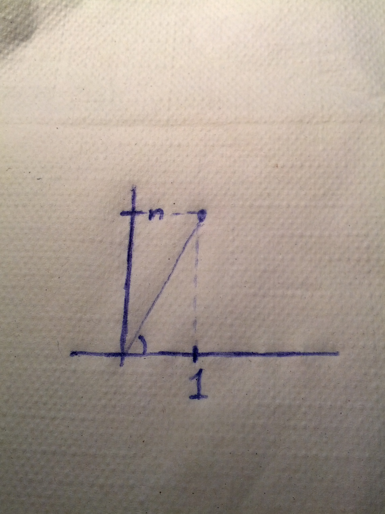
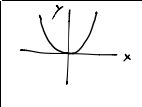
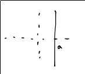
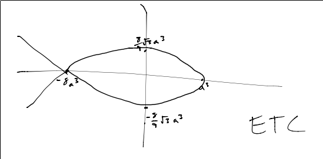

Visualization of Maps and Loci¶
More Tricks¶
has an angle of \(-\pi\).
\(1+in\) has angle \(\arctan n\).
So, adding the arguments of each factor together,
cool, huh.
Definition Argument
Denoted \(arg(z)\), \(arg(z) = \{\theta \in \Bbb R | z = |z|(\cos \theta + i \sin \theta)\}\)
If \(\theta_0 \in arg(z)\), then \(arg(z) = \{\theta_0 + 2\pi k | k \in \Bbb Z\}\)
Definition Principal Argument
Denoted \(Arg(z)\) (with an upper-case ‘A’), \(Arg(z)=arg(z) \cap (-pi, pi)\)
Visualizing Maps¶
Multiplication by a scalar¶
Consider the following function.
\(f_c(z) = cz\) for \(c \in /Bbb C\)
What does it look like?
if \(|c| = 1\), then \(c\) is on the unit circle. So, the mapping multiplies the modulo of \(z\) by 1, and rotates the argument of \(z\) by \(arg(c)\).
If \(|c| < 1\), then \(f_c(z)\) is a rotation of \(arg(c)\) and a contraction by a factor of \(|c|\)
If \(|c| > 1\), then \(f_c(z)\) is a rotation of \(arg(c)\) and an expansion by a factor of \(|c|\)
Okay, well that’s not too complicated thanks to De Moivre’s Formula. What about somehting like \(f(z) = z^2\)?
For \(f(x) = x^2\) on \(\Bbb R\), this is easy:
but \(f: \Bbb C \to \Bbb C\), it’s like a map from \(\Bbb R^2 \to R^2\), and most of us can’t think in 4D.
Plot magnitude: \(|f(z)|\) is a plot from \(\Bbb R^2 \to \Bbb R\), so the graph is 3D.

So if \(f(z) = z^2\), \(|f(z)| = |z^2| = |z|^2 = x^2 + y^2\) - a paraboloid.
But the magnitude only tells half of the story. We can also plot the argument mapping: \(f(z) = z^2\) doubles angles. We can visualize this as a vector field:

We could put the vector field on the Magnitude plot as well, but then things get cluttered.
Using Grid-Lines to Visualize Functions¶
curve is \(a+it\) for \(t \in \Bbb R\).
Let \(f(z) = z^3\).
Then, mapping the curve under the map \(f(z)\),
There isn’t a nice implicit formula for this;
Paramterizing this equation with \(t^2 = \frac{x-a^3)}{-3a}\),
And the plot:
Geometric Loci¶
We can describe geometric objects (usually lines and circles) as loci.
\(|z-q|\) is the distance between \(z\) and \(q\).
So,
- \(|z-q| = r\) where \(q \in \Bbb C\) and \(r \in \Bbb R_{>0}\) is a circle centered at q with radius r.

- \(\frac{|z-3|}{|z+3|} = 1 \iff |z-3| = |z+3|\) is a line centered between -3 and 3.
is a circle centered at \(-5 + 0i\)
In general, \(p, q \in \Bbb C\), \(r \in \Bbb R_{>0}\) describes a line if \(r=1\), and a circle otherwise.
Corollary 1
\(a, b, c, d \in \Bbb C\), \(r \in \Bbb R_{>0}\).
Solutions to \(|\frac{az+b}{cz+d}| = r\) also form a circle or a line.
Proof:
Factor out \(|\frac{a}{c}|\), to get the same form as above.
Corollary 2
\(a, b, c, d \in \Bbb C\), \(r \in \Bbb R_{>0}\).
Solutions to \(|\frac{az + b}{cz + d} - q|=r\) are also a line or circle.
Proof:
\(\frac{az+b}{cz+d}-q = \frac{(a-cq)z + (b-dg)}{cz + d}\)